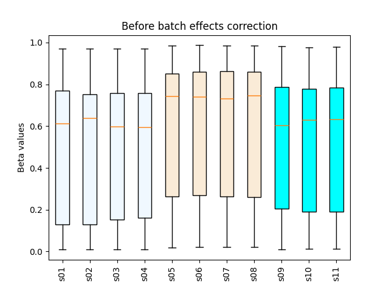
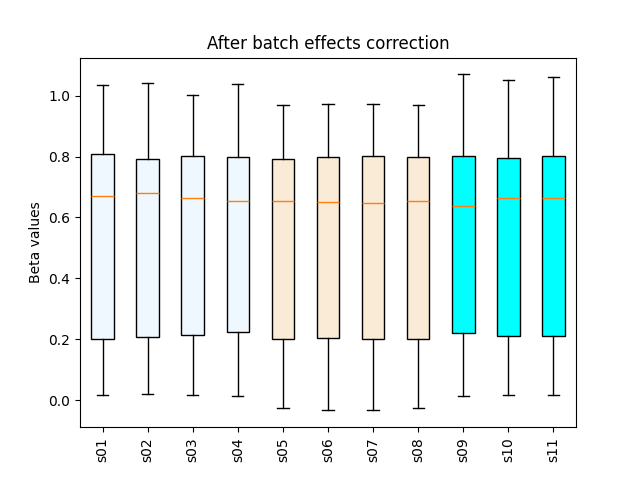

16. beta_remove_batch_effects.py
Correct beta-value matrices for technical (batch) effects using the ComBat algorithm.
16.1. Overview
beta_remove_batch_effects.py takes a CpG × sample beta matrix and a
sample-to-batch mapping, applies ComBat, and writes an adjusted matrix
plus before/after QC boxplots.
16.2. Synopsis
beta_remove_batch_effects.py \
-i <beta_matrix.tsv[.gz]> \
-g <batch_map.csv> \
-o <output_prefix>
16.3. Input files
16.3.1. Beta matrix (TSV/TSV.GZ)
Delimiter: tab
Header: first row contains sample IDs
Index: first column contains CpG IDs
Values: beta values in [0, 1]
Missing values: rows containing any NA/empty cells are removed prior to ComBat
Example:
CpG_ID Sample_01 Sample_02 Sample_03 Sample_04
cg_001 0.831035 0.878022 0.794427 0.880911
cg_002 0.249544 0.209949 0.234294 0.236680
cg_003 0.845065 0.843957 0.840184 0.824286
...
16.3.2. Batch map (CSV)
Delimiter: comma
Columns:
Sample,GroupSample IDs: must match the sample IDs in the beta matrix header (case-sensitive)
Grouping: each sample belongs to exactly one batch group (e.g., plates, chips)
Example:
Sample,Group
Sample_01,plate_1
Sample_02,plate_1
Sample_03,plate_2
Sample_04,plate_2
...
16.3.3. Example input files
16.4. Command example
$ beta_remove_batch_effects.py \
-i test_12_threebatch.beta.tsv.gz \
-g test_12_threebatch.batch.csv \
-o output
16.4.1. Example log (abridged)
@ 2025-10-07 10:14:37: Reading input file: "test_12_threebatch.beta.tsv.gz" ...
@ 2025-10-07 10:14:38: 0 rows with missing values were removed.
@ 2025-10-07 10:14:38: Reading group file: "test_12_threebatch.batch.csv" ...
@ 2025-10-07 10:14:38: Group/batch "test_12_threebatch.batch.csv" contains 11 samples
['plate_1', 'plate_1', 'plate_1', 'plate_1', 'plate_2', 'plate_2', 'plate_2', 'plate_2', 'plate_3', 'plate_3', 'plate_3']
@ 2025-10-07 10:14:38: Generate boxplot before correction. Save to 'output.boxplot.png'
@ 2025-10-07 10:14:39: Removing batch effect ...
Found 3 batches.
Adjusting for 0 covariate(s) or covariate level(s).
Standardizing Data across genes.
Fitting L/S model and finding priors.
Finding parametric adjustments.
Adjusting the Data
@ 2025-10-07 10:14:51: Generate boxplot after correction. Save to 'output.boxplot_combat.png'
16.5. Options
--version show program's version number and exit
-h, --help show this help message and exit
-i, --input_file PATH Tab-separated beta matrix; first row = sample IDs,
first column = CpG IDs. Can be .gz compressed.
-g, --group PATH Comma-separated batch map with columns: Sample,Group.
-o, --output PREFIX Output file prefix (no extension).
16.6. Outputs
<prefix>.combat.tsv— beta matrix after ComBat batch correction<prefix>.boxplot.png— distribution of beta values before correction<prefix>.boxplot_combat.png— distribution of beta values after correction
16.7. Figures
 {kind=link}
{kind=link}
16.8. Notes & tips
Rows with any missing values are removed prior to correction.
Ensure all sample IDs in the beta matrix appear exactly once in the batch map.
Batch labels (
Group) can be any strings (e.g.,plate_1,chip_B), as long as they consistently identify batches.If biological covariates should be adjusted for, handle them upstream before running this script (this wrapper applies basic ComBat only).
16.9. Reference
Johnson, W.E., Li, C., & Rabinovic, A. (2007). Adjusting batch effects in microarray expression data using empirical Bayes methods. Biostatistics, 8(1), 118–127. DOI: see PubMed 16632515.